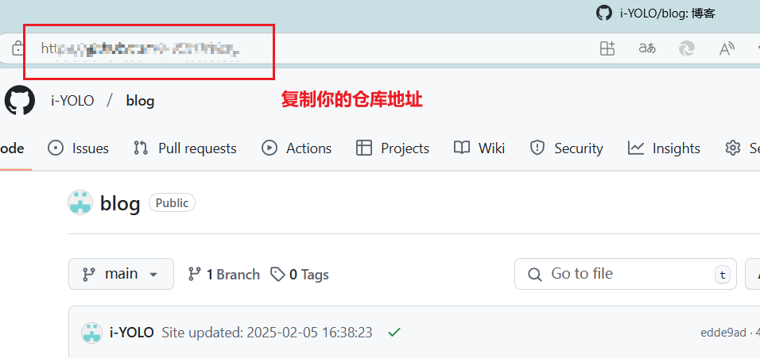

Hexo+Github+Zeabur搭建个人博客
下载安装Node.js
下载连接：Node.js — 在任何地方运行 JavaScript
安装比较简单，教程可以自行上网查找
1 | # 检查是否安装成功 |
下载安装Git
下载连接Git
安装比较简单，教程可以自行上网查找
1 | # 检查是否安装成功 |
安装VSCode
Visual Studio Code - Code Editing. Redefined
非必须，可以不安装，不过安装了之后查看目录结构时会比较清晰
Hexo搭建
安装Hexo
1 | # 安装hexo |
如果网络被阉，可以使用阿里云镜像源进行安装：
1 | npm install -g cnpm --registry=https://registry.npmmirror.com |
初始化Hexo
选择一个位置创建Hexo项目文件夹
1 | hexo init blog |
卡死了可以直接按下 CTRL+C 终止。
然后CD进入项目目录，再手动切换阿里镜像源安装项目依赖
1 | # 进入blog目录 |
选择并安装Hexo主题
进入Hexo官网下载主题Themes | Hexo
下面以
Butterfly主题为例
选择主题进入github主页
进入VsCode
在VSCode中安装中文插件，并打开刚刚创建的Hexo文件夹
在VSCode上方找到
新建终端，并将调出GitBash
1 | # 进入blog目录 |
git命令拉取主题
拉取成功后你会看到theme文件夹里面多了个butterfly文件夹
现在需要把你原有的config文件中的theme改为butterfly（如果你选了别的，那就用你自己下载的主题）
同时在config的同级目录下创建一个新文件
_config_butterfly.yml，并将theme中butterfly文件夹中的config文件内容复制进去
本地生成和预览
1 | # 清理缓存 |
注意：每次生成静态文件前，最好先clean一下，不然可能导致一些不必要的渲染错误（我搭建的时候就是深受其害！！！）
启动本地服务成功之后会给你一个网址，直接ctrl+d进入浏览器预览就可以了
推送部署到GitHub仓库
创建GitHub仓库
如果进不去网址，可以下载steam++对github进行加速
安装Hexo部署插件
1 | 官方源 |
复制你的仓库地址

配置Hexo部署信息，在
_config.yml文件中的规范写法：
1 | deploy: |
推送到github
1 | hexo deploy |
使用Zeabur进行部署
自行注册登录（与GitHub账号绑定）
中间有一步会让你选择一个服务的东西，可以跟着我选，如下
上面操作弄完直接部署就行了
自定义一个域名
到此，你就可以用这个域名来访问你的个人博客了！
至于如何编写博客，下一篇博客会给大家讲解，敬请关注！